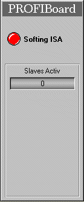

| axs_softing |
The PROFIBoard panel displays if there is an Hilscher PCI Card installed and denotes the values of
The axs_softing class is comprised of the following
components (files):
| Class Component | Description | File Name(s) |
| Class File | Includes the process picture representation and any popup menus. | axs_softing.symbol
|
| Graphic Files | Class Specific Graphic Files for both, class definition and documentation. | AXLedGreen.bmp
AXLedGreenGR.bmp AXLedRed.bmp AXLedRedGR.bmp AXLedYellow.bmp AXLedYellowGR.bmp AXLedGrey.bmp AXLedGreyGR.bmp (and some documentation
|
| HTML-Document | HTML document for Online Help. | axs_softing.htm |
Installation: The above listed files must be copied into a common sub-directory within the project's "classlib" directory. The name of the common directory can be chosen freely.
Features | Installation
| User Interface | Implementation
Notes | Settings
PROFIBoard Panel
The PROFIBoard panel displays if there is an Hilscher PCI Card existing and denotes the values of

| LED Color | Description |
| Green | There is no error. |
| Red | An error occurs. |
Features | Installation
| User Interface | Implementation
Notes | Settings
The axs_softing class is an integral part of the "axsystem" program. In terms of implementation it is required to have the "axsystem.tree" program installed into the running project. I.e. in the "Configuration" directory of the Project Window.
Features | Installation
| User Interface | Implementation
Notes | Settings
Features | Installation
| User Interface | Implementation
Notes | Settings